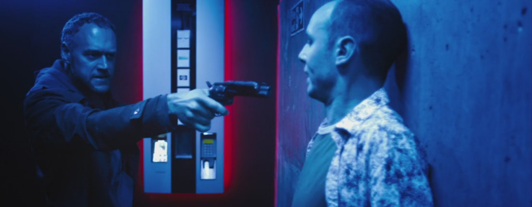
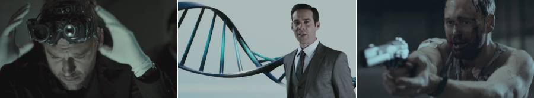
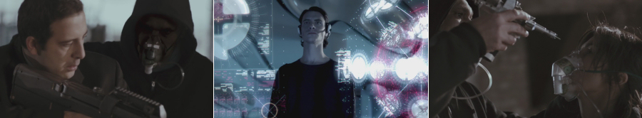

Narcopolis, a low-budget science fiction thriller film written and directed by Justin Trefgarne and produced by T Squared Films, paints a bleak picture of London in 2024, when hard drugs are legalised.
During the 2020s, the intensive lobbying of the pharmaceutical conglomerate Ambro, founded by Todd Ambro (James Callis), achieves the unthinkable – all hard drugs are legalised and distributed en masse to the general populace, driving illegal drug trade to the brink of extinction and at the same time bringing immense wealth to Ambro corporation and its shareholders.
The story opens with Frank Grieves (Elliot Cowan), a police officer and former drug addict, discovering a body at Ambro’s corporate headquarters. What is perplexing, is the fact that in this dystopian future, where everybody’s identity can be confirmed on the spot by a routine lookup in the police database, Grieve’s DNA scanner cannot identify the stranger’s body.
Eddie Rankin (Adam Sims), a forensic medical examiner and friend of Grieves’s, tells him that a trace of an unidentified drug has been found in the man’s body. When examining the evidence from the crime scene under a microscope, Grieves finds the word ‘Morlock’ inscribed on the sample taken from the body. While Grieves becomes obsessed with solving the dead stranger’s case, his boss, Kim Nolan (Robert Bathurst), does not approve of his investigation and instead orders him to deal with the few remaining illicit street drug dealers, who operate a shrinking black market since the legalisation of all narcotics.
Against specific orders to the contrary, Grieves returns to the site of the crime in search of more clues, but instead of answers he finds here an enigmatic young woman, Eva Gray (Élodie Yung), who also doesn’t have any record in the DNA database, which further mystifies Grieves. Gray is targeted by an unknown assailant and Grieves saves her life, only to find that the attacker has vanished into thin air. Grieves hopes to gain some insight into the deepening mystery by questioning Gray, but she uses the first opportunity to escape when he becomes distracted.
Under duress, Rankin reveals that he knows a Russian scientist, Yuri Sidorov (Jonathan Pryce), who may be able to shed some light into the origin of the unknown drug. Grieves visits Sidorov, and after paying off Rankin’s debt to him, the scientist tells him to return in 24 hours for answers. Following some more obstructions from Ambro security and his superiors, Grieves returns early to catch Sidorov unprepared and finds here Gray, who, after Grieves threatens to harm the scientist, who is hyper-sensitive to microwaves, by his mobile phone, reveals that she is a time-traveller from the year 2044 – accounting for the non-existence of her record in police DNA database. Grieves dismisses this unlikely explanation and demands to know more about what he believes may be an experimental drug codenamed ‘Morlock’ trialled by Ambro corporation. Despite Grieves believing she made the whole thing up and demanding the truth from Gray, she sticks to her story.
As Grieves transports Gray to a safe location, they are ambushed by Ambro security forces, but before they can get hold of the young woman, her friends appear out of nowhere, take out Ambro personnel, and disappear with Gray after injecting her eye with an unknown substance.
Witnessing this surreal incident and after Ambro thugs attempt to kidnap his son, Grieves finally realises that Gray was telling the truth and that the body he found earlier is in fact the adult version of his 9-year-old son, Ben, from the present. ‘Morlock’ – the race of brutish, ape-like humanoids from The Time Machine, a science fiction novel by H. G. Wells, the book that Grieves gave to Ben previously – is a secret message from his son, he sent him from the future. Following this revelation, Grieves stops at nothing to find the way to reach Ben’s timeline to try and save his son from his pre-destined fate…

Depressing, (almost) film noir-like setting of dystopian London of the near future (whose denizens seem to spend an inordinate amount of their time loitering in underground garages), a pound-shop version of Rick Deckard in the main role, legal drug dealers dressed like pizza-delivery boys, time-travelling by means of injecting one’s eye with some sort of psychotropic drug that activates the human brain as the ultimate time machine, Narcopolis has it all. What the film lacks though, is a coherent and credible storyline, more detailed character development, and convincing sense of thrill.